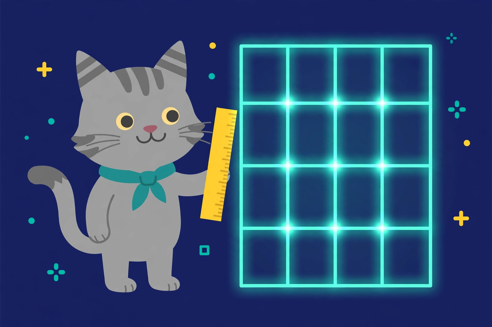

Q: What is Right Triangle 0001?
Demo answer: JAH-GRID-000001, shape right_triangle. Leg a: 19.69; Leg b: 15.22; Hypotenuse c: 24.8866; Angle at a: 52.2967°; Angle at b: 37.7033°; Area: 149.8409; Perimeter: 59.7966.

Mascot: Gridley the Measuring Cat. This is the question-and-answer website for The Signature Image Grid and Measure. Its keeper is JAH Measure Librarian.
Demo: answers come from this subject's own records on this page (keyword answers from the archive sample of 20 records). It is not the full hosted engine and it does not check the live web.
Online fact-checking is not connected yet — it needs the network's hosted service, which is waiting on setup. This page does not pretend to check the live web. No key is ever asked for here, and no sign-in is needed.
The demo answers from the archive sample of 20 records shipped with this page (archive-sample.json). It cannot check the live web, cannot reach other subjects, and never asks for a key.
Demo answer: JAH-GRID-000001, shape right_triangle. Leg a: 19.69; Leg b: 15.22; Hypotenuse c: 24.8866; Angle at a: 52.2967°; Angle at b: 37.7033°; Area: 149.8409; Perimeter: 59.7966.
Demo answer: The manifest counts 7,560 records. The site's own measure files hold 104,520 measures in 551 chunks; both numbers are shown because they disagree.
Demo answer: The first chunks measure rectangles, right triangles, regular polygons, isosceles triangles and circles, each with a full table of named measures.
Demo answer: Each record names a figure, states its shape, and gives a table of named measures — sides, angles, area and perimeter — as plain numbers.